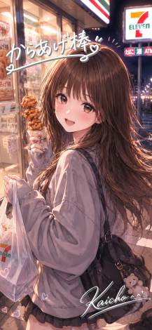

Thank you for coloring my May.
パルムで配信活動を始めてまだ
2カ月も経ちませんが過去11年の中で
最も内容の濃い月だと感じました。

And that rich month was colored most by
からあげちゃんです。
手を抜いてたつもりは１ミリもないんだ
でもからあげちゃん個人にフォーカスしたときに
もっとできることがあったんじゃないか
枠を巻き込むエンタメじゃなくて
もっとリスナー一人一人と向き合う機会を
つくるべきだったんじゃないか
ほんとはわかってるんだ
努力量の問題じゃない
配信の質じゃない
コンテンツ負けだってことは
Sub僕はエンタメしかない
エンタメしかできない
もっと面白く
他のコンテンツを寄せ付けない
圧倒的なエンタメ力で
リスナーを魅了する
今まで以上に血のにじむ努力をする
絶対勝つよ。エンタメ一本で。
からあげちゃんも最初同じ思いだったよね
コメント欄に表示された
「からあげ棒」の入室エフェクト
もう二度と見れないと思ってたものが見れた
その瞬間 5月の記憶が一気に押し寄せた
嬉しかったことも、
苦しかったことも、
支えられたことも。
全部ひっくるめて。
だから涙が出た。
もう二度と見れないと思ってた
「からあげ棒があそびにきました」
5月という濃密な時間そのものの
象徴だった人を、もう一度見れた
『あの時間は本当にあったんだ』
って再確認させてくれる出来事だった
濃い時間を共有したリスナーは、
離れたあとも物語から消えるわけじゃない。
遠くからでもいい
見守っててくれ
僕がPalmuで覇権を握るその日を。
「見ろよ、あの頃の約束どおりだぞ」
って胸を張れるような景色を見せたい。